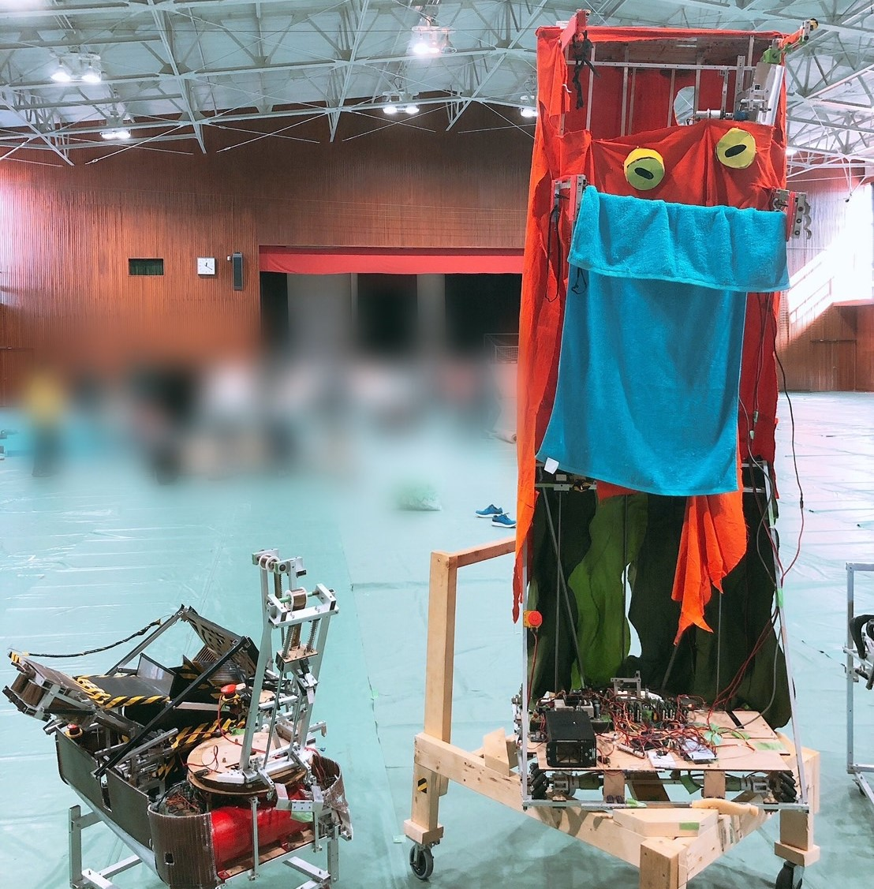
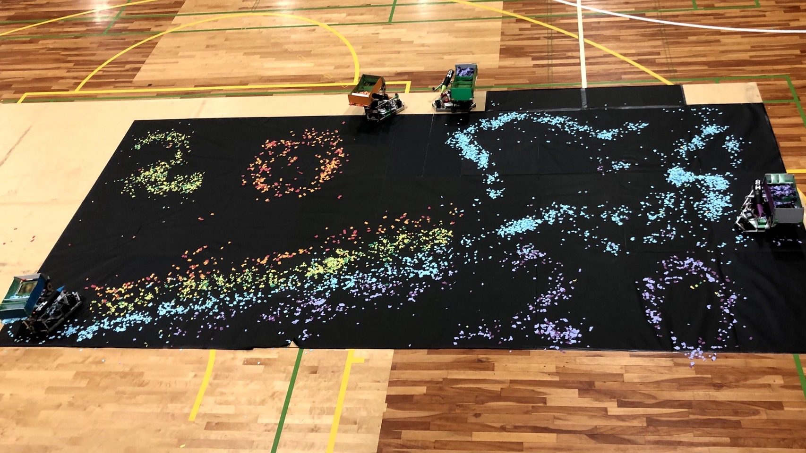

ロボットを解体するときにネジ、ナット、座金が出てきてそれらを手で分けるという作業が面倒くさいと思い、簡単に仕分けをしてくれる装置を考えた。結果、篩から着想を得て2019年9月に仕分け機を製作した。
仕分け機
— ヒーロ (@Hero_robocon) September 3, 2019
入れて振るだけでネジ、ナット、ばね座金、平座金の4つに分けます
(試作なので小さめに設計)
仕組みは篩とほぼ同じです！#3Dプリンター pic.twitter.com/d5Dz6L4fz5
新入生を部活動に勧誘するために製作したロボットである。2019年3月に製作をした。プログラムにも初挑戦して、サーボモータ3つの制御を行った。また、コントローラーも自作した。加工のほとんどはレーザー加工で、MDFを使用した。
勧誘用ロボット完成〜！！
— ヒーロ (@Hero_robocon) March 9, 2019
最後の動き気に入ってる！！
新入生の皆さん、月曜日これ持ってウロウロしていると思うので少しでも興味があれば是非是非声かけて下さい！
(私からも声かけますが笑)#春から府大高専 #ろぼっと倶楽部 pic.twitter.com/VkyN8ahPJo
高専ロボコン2018～2020に府大高専Bチームとして出場。
2019年から設計を担当することができた。タオルを干す機構、足回りなどの設計を行った。
2019年は近畿地区大会で田中貴金属賞を受賞。2020年は近畿地区大会で3位という結果を残した。


高専ロボコン2019のタオルを干す機構が1番気に入っている。ゴム紐でタオルを保持してそのゴム紐を順番に解除していくことで竿にタオルを干していく。
1つのモータで駆動可能かつコンパクトな機構にすることができた。
Bチーム自動機も高専祭に向けてコントローラーで操縦出来るように調整中です！ pic.twitter.com/KWONnDrk7H
— 府立大学高専ろぼっと倶楽部 (@opuct_robotclub) November 6, 2019
近畿地区合同ロボコンとは高専ロボコンの練習試合のようなもので、毎年3月に近畿地区で開催される。私たちは第11回大会(2018年3月)に出場した。
ペットボトルを回収する機構と足回りの設計を行った。当時はリンク機構に興味があり、ロボットにも取り入れてみたいということで平行リンクを用いた回収機構を設計した。
高専ロボコンの交流会でミニロボというイベントがある。自由参加のイベントで各高専の1年生が参加することが多い練習の場である。2018年12月開催のミニロボで初めてロボットを設計製作した。担当したのは足回りの設計である。
高専4年でロボットハンドを製作した。その試作機を3つ製作したので紹介する。
| 製作日 | 2021年4月22日 |
| 設計時間 | 1～2時間 |
| 3Dプリンタ出力時間 | 約2時間 |
| 調整時間 | 20分 |
| 総製作時間 | 4時間30分 |
| 製作日 | 2021年4月24日 |
| 設計時間 | 1時間30分 |
| 3Dプリンタ出力時間 | 6時間(出力ミスした時間も含む) |
| 調整時間 | 2時間 |
| 総製作時間 | 9時間30分 |
| 製作日 | 2021年5月10日 |
| 設計時間 | 1時間30分～2時間 |
| 3Dプリンタ出力時間 | 2時間 |
| 調整時間 | 20分 |
| 総製作時間 | 4時間30分 |
頭を撫でたり、体を傾けるとそれに反応してウサギの耳が感情を表現するというロボットである。耳は糸を引っ張ることで曲がっている。また、このロボットのボディ部分には100円ショップのタッパーを利用しているため、低コストなロボットとなっている。